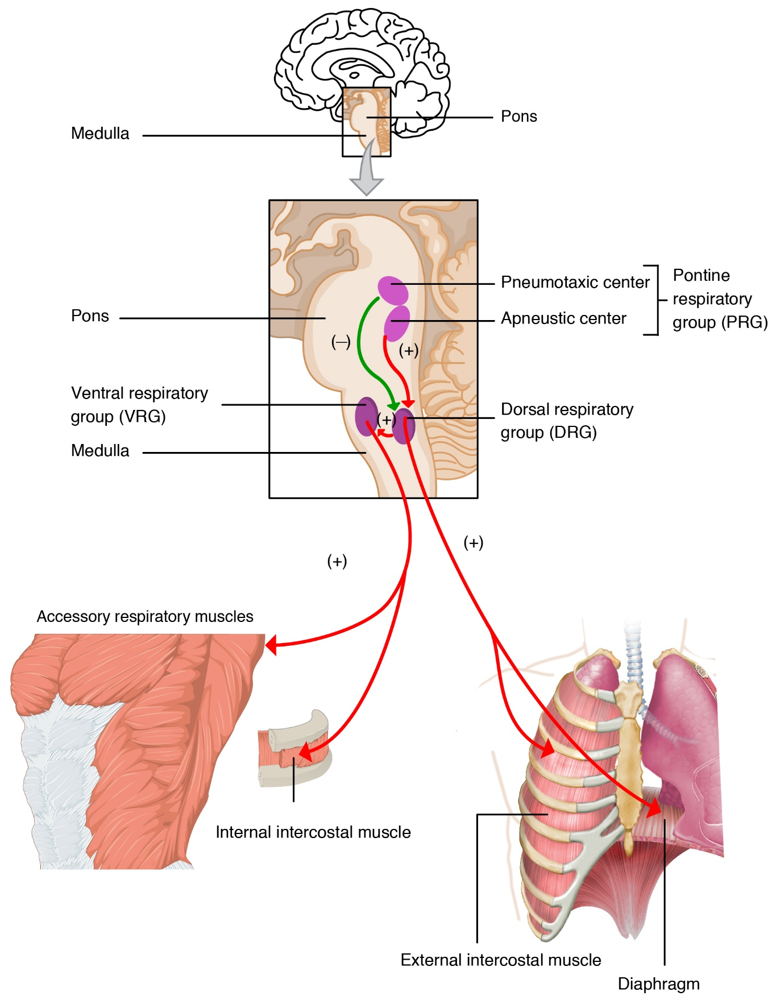

- Basic rhythm generated by the medullary rhythmicity center must be adjusted by pons.
- Apneustic center:
- Promotes long inspiration and sharp expiration (apneustic breathing).
- Pneumotaxic center:
- Needs to work together with apneustic center.
- Antagonizes the apneustic center’s effects.
- Inhibits inspiration, thus the normal rhythm.
